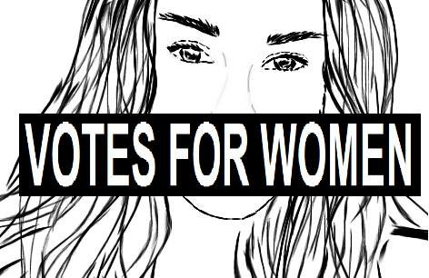

Pri spreminjanju same srednjeveške in renesančne miselnosti so pripomogle ženske, ki so se zagovarjale in potegovale za politične in socialne pravice. Takrat so se tudi začele formirati v gibanja, predvsem v času francoske revolucije.
Prvi, ki je podpiral in zagovarjal pravice žensk, je bil John Stuart Mill, ki je napisal delo Podrejenost žensk (1869). Na nastanek dela je vplivala predvsem njegov žena Harriet Taylor. Mill je menil, da naj tudi ženske sodelujejo pri političnih odločitvah.
Leta 1878 je bila organizirana prva mednarodna konferenca o pravicah žensk, na kateri so sprejeli sklep, da je odrasel moški enak odrasli ženski. Do konca devetnajstega stoletja se je feminističen aktivizem osredotočil predvsem na pridobivanje politične moči, zlasti pravico do volilne pravice žensk. Prvič v zgodovini so ženske dobile volilno pravico na Novi Zelandiji leta 1893.
